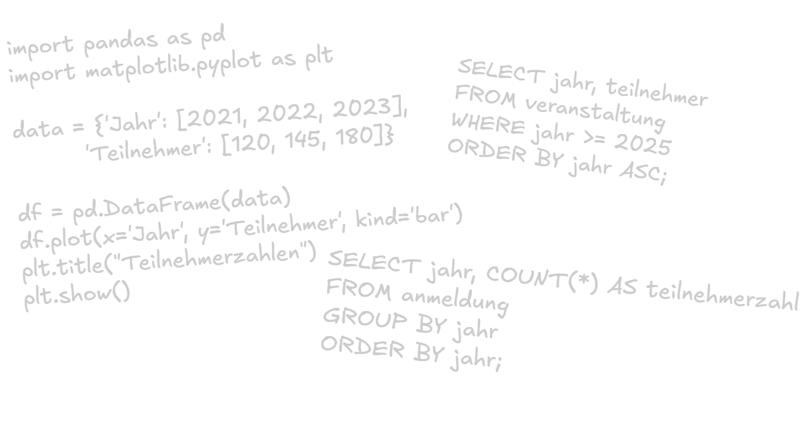

Motivation


Ergebnis: Kleine, praxisnahe Software und Automatisierungen
End-User Development (EUD) bezeichnet den Ansatz, dass Personen ohne professionelle IT-Ausbildung selbst digitale Werkzeuge erstellen - angepasst an ihre eigenen Bedarfe.